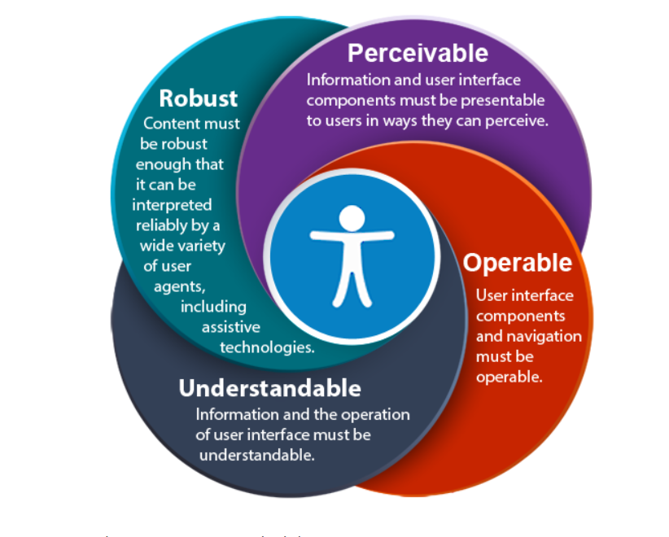
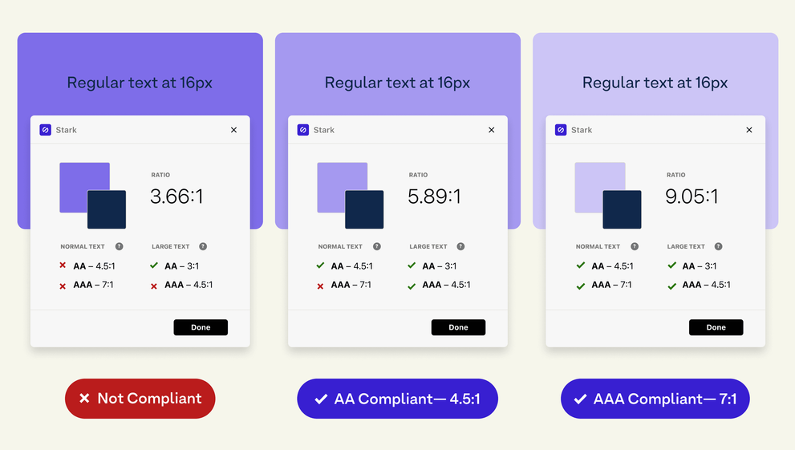
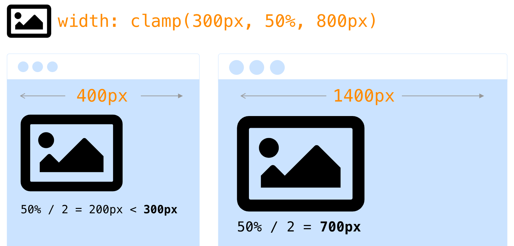
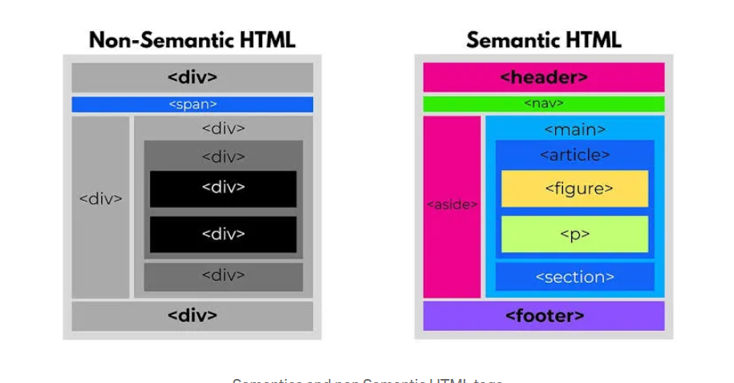

The Meta A11y Manifesto.
Designing accessible web experiences for everyone. Built with zero compromises, strictly adhering to WCAG standards.
The POUR Principles
Accessibility is not a feature; it is the fundamental architecture of the modern web. To achieve enterprise-grade inclusion, we strictly follow the four pillars of accessibility (POUR):
- Perceivable: Information and user interface components must be presentable to users in ways they can perceive.
- Operable: User interface components and navigation must be operable across all devices, including keyboards.
- Understandable: Information and the operation of the user interface must be logical and predictable.
- Robust: Content must be robust enough to be interpreted reliably by a wide variety of user agents, including assistive technologies.

Color & Contrast Metrics
Color should never be the sole method of conveying important information. For text, we must maintain a strict contrast ratio of at least 4.5:1 (WCAG AA) for normal text, and 7:1 (WCAG AAA) for enhanced readability.
In this Dark Enterprise theme, we utilize absolute White (Zinc 50) on Deep Midnight (Zinc 950) to ensure maximum clarity without causing visual fatigue or halation effects for astigmatism sufferers.

Typography & Layout
Typography drives the entire macro layout. We use relative units (rems and ems) to ensure text scales seamlessly if a user adjusts their browser preferences. Generous line-height (1.7) and precise character tracking ensure zero cognitive load.
Line length is capped at roughly 65-75 characters. Reading long lines of text forces the eyes to work harder tracking back to the start of the next line, which drastically reduces readability.

Structural Semantics
Proper HTML tags communicate deep meaning to screen readers and assistive technologies natively. A cleanly structured Document Object Model (DOM) requires fewer CSS overrides and scales perfectly across devices.
Using semantic landmarks like <header>, <main>, and <footer> allows users navigating via keyboard to jump directly to the content they need, bypassing repetitive navigation links.
